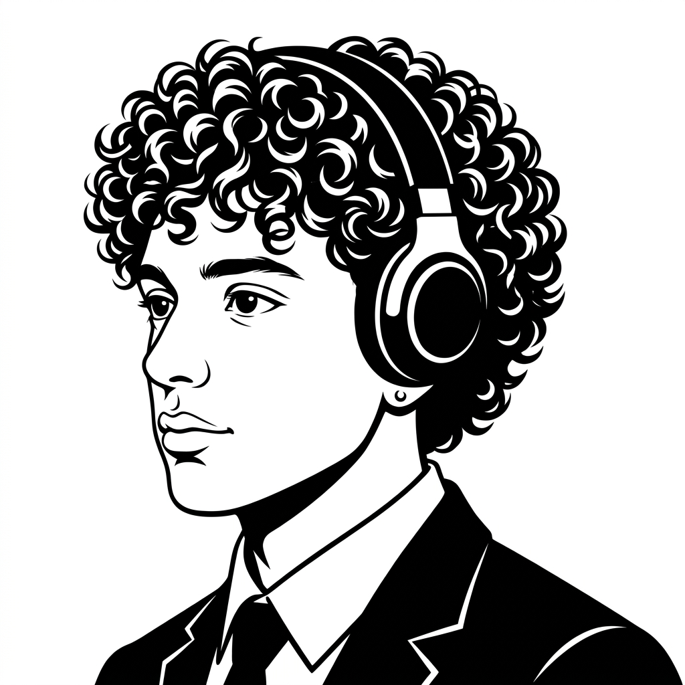

01FIGMA / PROTOTYPE
imperadorrestaurant & barExplore o menu ↗
Guilherme Lima Lopes / web developer
Desenvolvedor web e designer freelancer. Código limpo, interfaces úteis e experiências digitais com personalidade.
const guilherme = {
role: 'web developer',
focus: ['frontend', 'design'],
status: 'open to work'
};
guilherme.build('something great');_( 01 — PROJETOS )
Projetos acadêmicos e profissionais em que design e desenvolvimento trabalham juntos para entregar uma experiência clara.

Guilherme Lima Lopes( 02 — SOBRE )
Sou estudante e profissional em formação na área de Tecnologia, com foco em Desenvolvimento de Software e Data Science. Concluí o curso Técnico em Desenvolvimento de Sistemas pelo SENAI (formado ao final de 2025) e atualmente sigo aprofundando meus conhecimentos acadêmicos e práticos na área.
Tenho experiência com desenvolvimento web, personalização de sites em WordPress (incluindo Elementor, WooCommerce e plugins multilíngues), além de atuação em projetos freelance voltados à estruturação de sistemas, melhorias de experiência do usuário e soluções digitais para pequenas empresas.
Ao longo da minha trajetória, participei de projetos técnicos e iniciativas de inovação que fortaleceram minha capacidade de adaptação, análise crítica e resolução de problemas. Valorizo organização, responsabilidade e aprendizado contínuo, buscando sempre aplicar tecnologia de forma estratégica e eficiente para gerar impacto real.
( 03 — STACK & HABILIDADES )
Uma stack em expansão para construir produtos digitais, automações e experiências web completas.
Menos ruído.
Mais intenção.